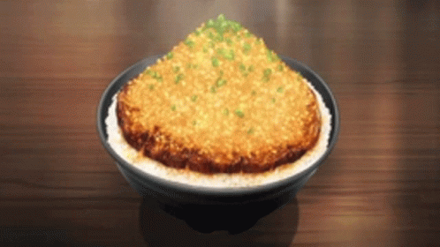

Chaliapin Steak Dono (A Food Wars dish)

A recipe of the famous mouth-watering Chaliapin Steak Don, as seen on Episode 7 of Food Wars.
This recipe was transcribed directly from the show. Excuse the lack of timings/portions...
Ingredients:
- Rice
- Onion
- Garlic
- Beef Sirloin
- Potato Starch
- Umeboshi Paste
- Pickled Plum
- Salt & Pepper
- Red Wine (Halal alternative TBA...)
- Soy Sauce
- Butter
Now Lets Cook it!
Cooking the meat
- Chop the onions... finely
- Remove tendons from the beef, and beat it with a meat tenderizer until flat.
- Cover meat on both sides with diced onion, and leave aside for 30 mins.
- Remove the onion, and add the Salt & Pepper
- Cook the steak (medium/rare/up to you).
- Remove from heat and melt 1 tablespoon of butter in a frying pan, whilst frying the onion until yellow/brownish.
- Add some Salt & Pepper to the cooking pot here and there.
- Melt the remaining butter in the pan, and fry the sides of the steak before taking it out.
Preparing the sauce
- Add red wine to the frying pan to deglaze the beef. Boil down the wine before scrapping off the meat juice.
- Add soy sauce and mix with everything. Adjust seasonings to personal preference.
- Thicken with dissolved potato starch.
There you have it, real food inspired by an actual cartoon.